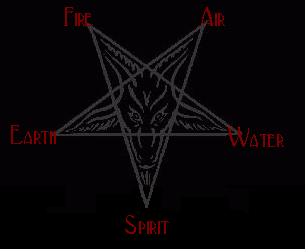

|  | 0-1 Degrees of all signs signify the beginning of important events in one's life with predictive astrology, such as solar and lunar returns.
29 Degrees of all signs bring about the ending of events in the life, such as relationships, leaving a place of residence and so forth with predictive astrology, such as solar and lunar returns. |
0-1 Degrees of Aries, Cancer, Libra and Capricorn are extremely critical degrees, both in predictive and natal astrology. These are the four cardinal signs; the solstice points of the Zodiac. What has begun may or may not last. Cardinal signs indicate strong beginnings, but lack the stability of the fixed signs or the adaptability of the mutable signs. 0 -1 of Libra oftentimes signifies the beginning of a relationship in predictive astrology. The affairs ruled by the planets on these degrees, the houses they are posited in and the house cusps with the sign they rule in a natal chart, are usually of significant importance in the life.
0 -1 Degrees of Taurus is always permanent, in prediction, for better or for worse.
0 -1 Degrees of the other fixed signs: Leo, Scorpio, and Aquarius are long lasting. Fixed signs signify permanence, stability, and things that last. In predictive astrology, what has begun will more than likely last.
0 -1 Degrees of Gemini, Virgo, Sagittarius, and Pisces are beginnings subject to change. Mutable signs always signify adaptability, restlessness, and change. They can be vacillating and weak. In predictive astrology, what has begun is subject to change.
29 Degrees of Pisces signifies a permanent ending in predictive astrology, as is 29 degrees of Taurus.
13 and 26 Degrees of Aries, Cancer, Libra and Capricorn give special importance to the planet/s or house cusps occupying the degree. The affairs ruled by the planets, the affairs ruled by the houses ruled by the planets, or by the houses these degrees are on point to something of the above-mentioned occurring in the life of the chart owner.
9 and 21 Degrees of Taurus, Leo, Scorpio, and Aquarius have a tendency to misfortune. 21 Degrees of Scorpio is a definitely a degree of loss, both natally and in prediction, but the loss is not always negative.
4 and 17 of Gemini, Virgo, Sagittarius, and Pisces are similar to the 13 and 26 Degrees of the Cardinal signs.
15 Degrees of Leo is one of the worst degrees in the zodiac, either natally or in prediction. Prominent in the charts of serial killers, felons serving life sentences, in the charts of those who have fated hard luck, etc. Helen Keller, both blind and deaf from a very early age had her chart co-ruler Mars at 15 degrees of Leo, along with no air signs. [Air signs are communication]. Stevie Wonder [blind] Pluto at 15 degrees of Leo, Ludwig van Beethoven, deaf, Saturn at 15 degrees of Leo.
25 degrees of Leo is violent, and some who have this are in prison for violent crimes, especially those with their chart rulers on this degree. In addition, this is not a good degree for a planet to be on in a predictive chart. Problems will result from this placement according to the affairs it rules and/or house it is in. This is a very strong degree of alcoholism. Many who are chronic alcoholics have prominent planets on the 25th degree of Taurus, Leo, Scorpio, or Aquarius. The influence is especially strong if Neptune is involved.
15 Degrees of Taurus, Scorpio and Aquarius are also unfortunate, but not to the extent as 15 degrees of Leo, one of the worst degrees in the Zodiac.
16, 17, 18, 19, 22, and 25 Degrees of Taurus are all degrees of violence.
9 Degrees of Gemini and Sagittarius are both degrees of homicide.
17 Degrees of Gemini is degree of homicide.
6 Degrees of Cardinal signs: Cancer, Libra, Capricorn, and Aries indicates a possible physical disability, and to a lesser extent, especially if the planet occupies the first house, is prominent and/or other factors in the chart support this.
6 Degrees of Leo and 6 degrees of Aquarius are both very bad for eyesight.
12 Degrees of Leo is a degree of beauty.
9 Degrees of Virgo and Pisces are known as fatal degrees, body in the ditch degrees and degrees of suffering.
9 degrees of Pisces is one of the worst degrees in the Zodiac.
9 Degrees of Sagittarius is a warrior degree, and is also a degree of homicide. Prominent planets on this degree are also seen in the charts of religious and spiritual reformers.
22 degrees of all signs, especially the fixed signs is bad, either natally or in prediction.
FIXED STARS:
Allow 1 - 2 degrees orb for conjunctions and oppositions to other planets. Conjunctions and oppositions are the only aspects that matter, with conjunctions being most important. The following interpretations concern when a fixed star is conjunct a planet in one's chart or an angle or is prominent. The nature of the planet also should be blended in with the nature of the fixed star. Personal planets such as chart ruler/s and angles are important, with the influence of the fixed star being emphasized in both the life affairs and in the personality.
The four most prominent fixed stars are:
- Aldebaran; 9 degrees of Gemini
- Regulus; 29 degrees of Leo
- Antares; 9 degrees of Sagittarius
- Formalhaut; 3 degrees of Pisces
These stars can also be prominent in magick.
- Aldebaran is known as "Watcher of the East."
- Regulus is known as "Watcher of the North."
- Antares, is known as "Watcher of the West."
- Formalhaut is known as "Watcher of the South."
ALPHERATZ - [Sirrah] [14 Degrees Aries]
Freedom, love of movement, speed, intellectual and can indicate riches and honors. The personality often has strong motivation, willfulness and the ability to take action. Those with this placement often come before the public and are popular with the masses. There is a considerate and harmonious nature, which is good for relationships.
BATEN KAITOS - [20 degrees of Aries]
There can be forced migration, accidents, and shipwreck.
MIRACH - [0 Degrees Taurus]
This star can give happiness in marriage, bestow artistic talent, and give a love of beauty. There is often strong intuition, along with a brilliant mind, and much creative talent. The disposition is generous and loving. These people often make friends easily and inspire others. Mirach gives beauty, and a love of the home and family.
HAMAL - [6 Degrees of Taurus]
There is a need for personal independence. These people often have a strong will, and dislike authority. This placement gives independent thought and leadership ability. In some cases, there can be cruelty and premeditated crime.
ALMACH [Alamack] - [14 degrees of Taurus]
This star gives a popular influence, making one well liked and bringing benefits come from others, along with a prominent position, and possible fame. There is often artistic ability.
CAPUT ALGOL - [25 Degrees of Taurus]
Caput Algol is one of the most violent stars in the zodiac. In natal charts, this gives a most violent disposition, along with murderous tendencies. These violent tendencies are intensified when one is intoxicated with drugs and/or alcohol. Here is the nasty, violent, mean, and vicious drunk. On the upside, it can bestow athletic ability. The intense nature, when sublimated, can give the drive to reach the top, but the affairs of the planet occupying this degree often end in disaster and misfortune. When conjunct the descendent, violence can come from others, especially the lover or marriage partner. I have noted more than one person with the Sun in conjunction with this star in being a pathological liar.
ALCYONE - THE PLEIADES - [29 Degrees of Taurus]
This star is bad for the eyesight and can even bring blindness. It also brings sorrowful events with something to cry about. There can be keen insight, strong ambition, and a harshly judgmental nature. There is often a love of nature, and the outdoors. There can be possible injuries to the face.
HYADES - [5 Degrees of Gemini]
Hyades gives a powerful sex drive, along with a greedy, overindulgent and excessive nature. These people are often exploitive of others. There can be tremendous success in life, but a lack of control and bad habits can cause one's ruin. There is often much vitality and the energy level is high. This placement gives a talent for martial activities and the military.
THE NORTHERN BULL'S EYE, EPSILON TAURI - [7 Degrees of Gemini]
This star gives artistic talent, writing ability, popularity, scientific and occult ability, and is often prominent in the charts of astrologers. These people often make outstanding contributions in their chosen fields.
ALDEBARAN - [9 Degrees of Gemini]
Watcher of the East
Aldebaran rules the hands and fingers. There is a tendency to weakness of the lungs and possible pneumonia. The death is often violent. Those with this placement have high ambitions, and they often attract dangerous enemies.
RIGEL - [16 Degrees of Gemini]
Rigel gives lasting riches, honors and favor. When prominent, it is good for military careers, [especially if in conjunction with the midheaven] and mechanical ability. There is teaching ability and the personality is somewhat conforming. Ambitious and hard working, these people can stay on top, as long as effort is maintained.
BELLATRIX - [20 degrees of Gemini]
Bellatrix brings military and other honors which can end in disaster. This star is bad for the eyesight. There is an aptitude for quick decision-making. Those with this star prominent are often strongly opinionated, and have a belligerent, daring, and adventuresome nature. If Bellatrix is in conjunction with the midheaven, one may be a swindler or forger.
CAPELLA - [21 degrees of Gemini]
There is often superior intelligence, along with a love of learning and research. Capella brings martial and/or ecclesiastical honors and riches, often followed by squander and waste, leading to ruin. The personality can be eccentric and unusual in some way.
ALNILAM - [23 degrees of Gemini]
Alnilam bestows honors, especially when in conjunction with the midheaven.
POLARIS - [28 degrees of Gemini]
Polaris can give spiritual powers and much respect gained from them. There can be possible chronic illness and/or physical problems. Money coming from others can encounter problems and loss. When this star is prominent, the instincts and common sense is strong along with the ability to find one's way.
BETELGEUSE - [28 degrees of Gemini]
This is one of the most fortunate of fixed stars and is frequently prominent in the charts of those who have had major success in life . Betelgeuse brings wealth, honors, fame and fortune.
SIRIUS [ALPHA CANIS MAJOR] ORION'S GREAT DOG STAR - [13 degrees of Cancer]
Powerful position in government, along with honors and fame. There can be danger from dogs, along with being vulnerable to violence.
CASTOR - [20 degrees of Cancer]
Possible violence, along with sudden fame, followed by prison or disgrace. Castor brings weakness of the eyes, and injuries to the face. The disposition is usually well mannered, with strong principles.
POLLUX - [23 degrees of Cancer]
Pollux gives athletic ability, and is favorable for martial artists, boxers, fighters and warriors. This star is bad for the eyesight, and can bring injuries to the eyes and face. There can be connections with poisons. Honors are often followed by disgrace, and possible imprisonment. There can be a cruel, subtle, and scheming nature.
PROCYON - [25 degrees of Cancer]
A love of dogs, but there can be danger from their bites. Achievement comes through personal efforts. Danger from liquids, poisons and gases. The nature is often jealous, combative, and strong willed. These people like to see ideas put into action.
PRAESEPE - [7 degrees into Leo]
Praesepe is very bad for the eyesight. Losses can come from others. The character is adventuresome, brutal, perverse, and reckless.
ALPHARD - [26 degrees into Leo]
Lack of control, violence, unethical, subject to imprisonment and tragedy. Connection with poisons and toxins.
REGULUS - [29 degrees into Leo]
Watcher of the North.
Astrological ability, independent and high spirited. There can be destructive tendencies, and military honors. These people often obtain positions of power, along with success, and have leadership ability. There is also the possibility of disgrace and a disastrous fall from a prominent position.
ZOSMA - [9 degrees of Virgo]
Victimization, unhappiness, suffering, subject to disadvantage and abuse. Those with this star prominent often seriously suffer in some way. There can be physical problems and/or disabilities.
DENEBOLA - [21 degrees into Virgo]
Honors and wealth, impulsiveness, disgrace, regrets, misfortunes through natural forces.
VINDEMIATRIX - [9 degrees into Libra]
There can be a tendency to having spinal problems. The marriage can be unfortunate, and in some cases, the loss of the partner through death.
There are often major problems and losses through women. [Bill Clinton is a perfect example here].
ALGORAB - [13 degrees of Libra]
One who is destructive, malevolent, fiendish, deceitful and lying. Here is the dishonest businessperson or politician. The character is self-centered, and can be charming and sly. There is a very strong tendency towards dishonesty.
SPICA - [23 degrees of Libra]
There can be wealth and honors, along with fortune and fame. Spica gives ability in the sciences, in the arts, writing ability, musical talents, and much creativity. These people are usually sociable. Spica is a great benefactor to any planet it is conjunct.
ARCTURUS - [23 degrees of Libra]
Lasting success through personal effort and self determination. Fortune can come through travel. The nature can be hot tempered.
PRINCEPS - [2 degrees of Scorpio]
above average in intelligence, good for research and a talent for science.
ALPHECCA - [11 degrees of Scorpio]
This star makes one artistic, with a talent for poetry, and the occult and healing ability. There is often success in business, along with leadership ability. There is a tendency to be a loner.
SOUTH SCALE - [14 degrees of Scorpio]
This star can bring troubles, as it is conjunct 15 degrees. There can be physical anomalies and/or serous health problems. It has a reputation for making one susceptible to poisoning.
NORTH SCALE - [18 degrees of Scorpio]
This star often gives honor, distinction, ambition, and good fortune.
UNUKALHAI - [21 degrees of Scorpio]
This star indicates a loss in some area, both natally and in prediction. This loss is not always negative in prediction. There can be perversions, a lack of self-control and a danger of poisons. The personality can be crude and vulgar.
ANTARES - [9 degrees of Sagittarius]
Watcher of the West
The nature can be impulsive, headstrong, stubborn, and courageous. The life meets with unpredictable events, unexpected upsets and changes, and a loss of success can come from self-undoing. There is military and martial aptitude, bringing honor and favors. This is a warrior star. Those who have this star prominent in their charts often rebel against spiritual and religious oppression, bringing drastic changes in these areas.
LESATH - [23 degrees into Sagittarius]
Outspoken, perverse, associated with acids, and danger.
ACULEUS - [25 degrees into Sagittarius]
There can be trouble with the eyesight. Aculeus bestows leadership ability, but makes one subject to mental, verbal, and/or spiritual attack. These people are often victims of gossip.
ACUMEN - [27 degrees into Sagittarius]
These people on the down side can get worn down by life and just not care anymore. There can be disgrace, legal problems, and possible imprisonment.
WEGA - [15 degrees into Capricorn]
Occult talent, along with riches and fame. The nature is idealistic, pretentious, hopeful, artistic, and refined.
DENEB - [19 degrees into Capricorn]
Good for military, successful warriors, ability for leadership and command. The nature is often benevolent.
TEREBELLUM - [24 degrees into Capricorn]
Greedy, scheming, shrewd. There can be fortune, but with guilt and possibly a bad reputation.
ALTAIR - [1 degree into Aquarius]
Bold, confident, stubborn, sudden wealth, position of high command, danger from reptiles, an adventuresome risk taker.
GIEDI - [2 degrees into Aquarius]
Sacrifices are often made, and strange events occur in the life. There is much suspicion and mistrust.
ARMUS - [11 degrees into Aquarius]
Nagging, unstable, contemptible, spiteful.
DENEB ALGEDI - [23 degrees into Aquarius]
One's life is often full of changes, along with living on the edge. These people are usually trustworthy, just, and fair, with a knowledge of human nature.
FORMALHAUT - [3 degrees of Pisces]
Watcher of the South.
The effects of this star can be variable, for better or for worse.
This star can bring success and financial wealth, but there is often very hard work along with plenty of responsibility. It can increases and amplify whatever planet it conjuncts.
DENEB ADIGE - [4 degrees of Pisces]
This star often gives above average intelligence, and an idealistic nature. Money can be made through the arts and sciences. There is often psychic talent and a likable disposition.
ACHERNAR - [15 degrees of Pisces]
Royal honors, success in public office, philosophical, patient, inclined to religion. There can be misfortune and problems with any planet at 15 degrees.
MARKAB - [23 degrees of Pisces]
There is a tendency to danger from fire, fever, cuts and blows. This star can bring good fortune, and is favorable for spiritual pursuits and meditation. Ones ambitions are often not realized.
SCHEAT - [28 degrees into Pisces]
There can be misfortune, possible suicide, drowning, one's being murdered, along with rapidly gaining and also losing friends. The nature is often unpredictable, with a tendency to fantasize.
© Copyright 2002, 2005, 2013, Joy of Satan Ministries;
Library of Congress Number: 12-16457
Planets: Their Signs, Houses and Aspects
BACK TO AZAZEL'S ASTROLOGY INDEX